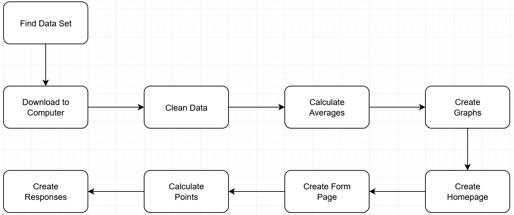
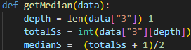

BR1a: For this project, I used the leaving cert points statistics from the years 2018 to 2024 from the Central Applications Office (CAO) website.
BR1b: I imported pandas into the Python code. I created functions that clean the data for a given year, take in the file path as an argument, import the data as a dataframe and remove unwanted characters, such as commas and percentage signs. The last function saves this dataframe as a new file.
BR2a: Using Python, Plotly and Pandas, I created histograms to show the frequencies of the points ranges. I created line graphs to display the means, modes, and medians for every year. I created functions to draw the histograms and ran the function for every year.
BR2b: In the histograms, the X-axis displays the point ranges, and the Y-axis displays the frequencies that these ranges were earned. In the line graph, the X-axis represents each year in the database, and the Y-axis represents the mean, mode, and median points earned each year.
BR2c: “makeStats” function is responsible for returning the mean, mode, and median for a particular year as a dictionary. This function is then repeated for every year.
BR3a: I created a webpage to display text and the graphs. The home page contains information in relation to the graphs, discussing the impacts Covid-19 had on Leaving Cert points.
BR3b: The home page contains all the data presented in pairs of histograms (Fig.1 – Fig.7) and a line graph (Fig.8) below the histograms.
AR1: Plotly allows the user to interact with these visualisations. The user can hover over the graphs for more information, and they are able to zoom into each of the graphs for something specific.
AR2a: I created a separate webpage where six subjects are inputted for recommendations. These include the subject name as a string, the level as a Boolean, and a grade as an integer.
AR2b: This data is validated and stored in “subjectData.csv”, which confirms the use of three different data types.
AR2c: A record of previous inputs is stored and when inputting a subject name, those inputs may appear underneath the text box as suggested answers.
AR3: After the user inputs the data, the webpage will make a suggestion based on the number of points they scored. This keeps in mind of the level of each subject and their grade.
Ever since the Covid-19 pandemic began, many people had noticed that students were scoring considerably higher in their Leaving Certs than they had prior to 2020. There are a few reasons for this. One reason is that many subjects had received a cut in the exam length, such as one less essay in the Politics and Society examination. Another reason is inflation points, which were meant to make up for learning difficulties during the pandemic. Many students also received a predicted grade rather than sitting the exam for real. Predicted grades were used during Covid times to give a prediction of what a student would have done in their Leaving Cert if they actually sat the exam. The prediction was made by their teachers. Whilst it was an effective work around for the time, it did introduce bias to the results, which was likely to result in higher grades on average. All these factors resulted in students seeming to score higher grades across all subjects, leading to receiving higher points. Hearing about this, I was interested in discovering for myself if there really was an increase in Leaving Cert points over the last five years, or whether it only assisted in maintaining the same average points as prior to 2020.
For this analysis, I decided to look at the Central Applications Office (CAO) website to see if they had included any statistics that may be able to help me for this analysis. Luckily, I was able to find data on the number of students that earned a particular range for a given year. I found this by clicking on “Media and Statistics” on the homepage. From there, I clicked on “Points by year and Leaving Certificate points statistics”, which brought me to a webpage that let me pick a year to view the Leaving Cert points statistics for that given year.
I also used Careers Portals CAO points calculator for comparison. However, you need prior knowledge of the mean, so it does not make any real-world comparisons. There is scope for a points calculator to communicate to the user how well they are doing relative to others. This could easily be achieved by comparing the user’s score to the median score of the previous year.
I will locate a data set online that contains information about how many students sat the Leaving Cert in every year from 2018 to 2024 and the frequencies of the points earned each year.
I will download these data sets onto my computer in the form of comma separated variable files.
In Visual Studio Code (VS Code), I will use Python and the Pandas module in Python to clean up this data to allow Microsoft Excel to read the data easier. This helps since the original data set contains a lot of words not useful in the analysis.
I will use a separate Python programme to calculate the means, modes, and medians for every year. These figures will be used in my analysis and in my webpage
Using this information as well as Plotly, I will create histograms showing the frequencies of student’s scores for each year. The point ranges will be the X-axis, and frequency will be the Y-axis. Using the averages, I will create a line graph that displays the means, modes, and medians for every year. I will then save these graphs on my computer for them to be used in my webpage. The X-axis will be used for years, and the Y-axis is used for all the averages.
I will use VS Code and HTML to create a homepage consisting of the graphs I have downloaded onto my computer. This webpage will also include text which refers to the graphs, containing information about the graphs and about the means, modes, and medians of each year.
Plotly will allow the user to interact with the data visualisations, allowing to hover over the graph to see more information, and to zoom into a particular part of the graph for more specific detail.
I will create a separate HTML webpage using VS Code to create a form that will collect and store data from the users. It will take in six subjects, their levels, and their grades to calculate the points earned by the user. This will include three data types, including strings for the name of the subject, Booleans for the level, and integers for the grade.
Using this information, the webpage will calculate the points earned by the user, considering of grades and levels.
The computer will suggest to the user based on the points earned and the average points earned in 2024.
Weekly Log
Week 1 - 2nd December
Week 2 - 9th December
Week 3 - 16th December
Week 4 - 23rd December
Week 5 - 30th December
Week 6 - 6th January
Week 7 - 13th January
Week 8 - 20th January
Week 9 - 27th January
Week 10 - 3rd February
Week 11 - 10th February
Week 12 - 17th February
Week 13 - 24th February
Week 14 - 3rd March
Week 15 - 10th March
Week 16 - 17th March
This is found in the app2.py file and was what I needed to change to convert a Boolean taken in the webpage into a string that could be interpreted in the “if” statement later. I needed the Boolean to address the first advanced requirement. If the student is doing a higher level subject, the Boolean will be True, and if the student is doing ordinary level, the Boolean will be false. This is a false simulation however, as there is a potential for a foundation level in some subjects and therefore limits the project but satisfies the first Advanced Requirement.
The purpose of the above code is to find the location of the median. I simulated testing various data frame columns over the span of a week starting on the 7th January. The results are contained in the following table.
| Date | Input (Last Item in List) | Expected result | Result | Pass/Fail | Fixes |
|---|---|---|---|---|---|
| 7/1/25 | 101 | 51 | 51.0 | Pass | N/A |
| 9/1/25 | 101.3 | 51 | 51.0 | Pass | N/A |
| 10/1/25 | "101" | 51 | ValueError | Fail | Include int on line 3 |
| 14/1/25 | "One-hundred and one" | 51 | ValueError | Fail | Introduce try and except functions |
Overall, I am quite happy with how this project turned out as I was successful in conducting data analysis on something I was interested in finding out about for several years. It was also a great opportunity for me to learn about how to use the Pandas module in Python and I learnt why graphs are so vital for data analysis, instead of exclusively relying on spreadsheets to present data. I did find the process of adding a third data type later very frustrating, as if I had read the brief again, I would have been better equipped and would have initially created the code with this in mind. I also was annoyed at myself for not doing as much research into Matplotlib and Plotly as I wished, as needing to change this later was admittedly tedious. Despite this, I feel these annoyances were great learning experiences for going into software development later in college.
If I were to do this project again, I would pay considerably more attention to exactly what the brief asked me to do. I felt that not paying as much attention to what they asked me to do made me spend a lot of time trying to fix easy to avoid mistakes. Also, if there was something I would want to add to this project, it would be to consider special cases, such as in Higher Level Maths, where there is 25 bonus points, and Link Modules, which has a completely distinct grading system unlike most subject, and therefore, would reflect the real world much better. I would also have included a hyperlink on both webpages to easily get from one to the other.
Central Applications Office - Leaving Cert Points Statistics
RTE news - Significant increase in number intending to sit Leaving Cert, data shows
Careers Portal - CAO points calculator
| Section | Word Count |
|---|---|
| 1. Meeting the brief | 391 |
| 2. Investigation | 375 |
| 3. Plan and design | 396 |
| 4. Create | 1038 |
| 5. Evaluation | 279 |
| Total: | 2469 |